2 Auswahl und Verwendung der Arbeitsmittel
Die Verwendung von Arbeitsmitteln umfasst jegliche Tätigkeit
mit diesen. Hierzu gehören insbesondere das Montieren und
Installieren, Bedienen, Betreiben, Instandhalten, Prüfen, Demontieren
und Transportieren. Im Rahmen der Auswahl und der
Verwendung von Arbeitsmitteln zum Halten von Lasten über
Personen sind Gefährdungsbeurteilungen durch fachkundige
Personen durchzuführen.
Ziele dieser Gefährdungsbeurteilungen sind die Auswahl von
geeigneten Arbeitsmitteln hinsichtlich Art und Dimensionierung
sowie die Festlegung von Maßnahmen für deren sichere Benutzung.
Hierbei wird der gesamte Laststrang betrachtet - beginnend
an der Schnittstelle zum Bauwerk bis hin zur Last.
Wenn Arbeitsmittel speziell für die Benutzung in der Veranstaltungstechnik
dimensioniert und hergestellt sind und ein Nachweis
für den Anwendungsfall vorliegt, können diese nach Herstellerangaben
und deren Kennzeichnung verwendet werden.
Arbeitsmittel können je nach der vom Hersteller festgelegten bestimmungsgemäßen Verwendung Produkte im Sinne der Maschinenrichtlinie sein. In solchen Fällen ist eine CE-Kennzeichnung und eine EG-Konformitätserklärung gemäß Maschinenrichtlinie erforderlich.
Die CE-Kennzeichnung im Sinne der Maschinenrichtlinie ist nicht zulässig, wenn ein Produkt nicht dem Geltungs�bereich der Maschinenrichtlinie zuzuordnen ist. Dies gilt zum Beispiel für Sicherungsseile oder Spannschlösser.
2.1 Anschlagmittel
Anschlagmittel müssen bezüglich der im Betrieb auftretenden
Belastungen entsprechend beschaffen und ausreichend bemessen
sein.
Basierend auf den Festlegungen nach Abschnitt 1 "Grundlegende
Sicherheitsanforderungen" gilt für Anschlagmittel im Produktions-
und Veranstaltungsbereich das Prinzip der Eigensicherheit.
Wenn sich Personen unter den Lasten aufhalten können,
dürfen Anschlagmittel maximal mit dem halben Wert der vom
Hersteller angegebenen Tragfähigkeit belastet werden. Dadurch
wird die Verdoppelung des Betriebskoeffizienten erreicht.
Tabelle 1 Mindestens erforderliche Betriebskoeffizienten von Anschlagmitteln
| |
keine Personen unter der Last
Betriebskoeffizient
Richtlinie 2006/42/EG (Maschinenrichtlinie),
Anhang 1* |
Personen unter der Last
verdoppelter Betriebskoeffizient zur Erreichung
der Eigensicherheit nach DGUV Vorschrift 17 und 18 |
| Drahtseile |
5 |
10 |
| Rundschlingen mit Drahtseileinlage |
5 |
10 |
| Rundschlingen und Hebebänder aus
Chemiefasern |
7 |
14** |
| Anschlagketten |
4 |
8 |
| Schäkel nach DIN EN 13889: 2009-02 |
5 |
10 |
| andere Elemente aus Metall im
Laststrang*** |
4 |
8 |
*) sofern zutreffend
**) Einsatz nur mit zusätzlicher Sekundärsicherung nach Abschnitt 2.3 zulässig
***) z. B. Spannschlösser, Lastmesseinrichtungen, Trägerklemmen, Aufhängeglieder
Insbesondere kommen folgende Anschlagmittel zum Halten von
Lasten über Personen in der Produktions- und Veranstaltungstechnik
zum Einsatz:
- spezielle Anschlagmittel zum Halten von Lasten über Personen
in der Veranstaltungstechnik (vgl. Tabelle 2 a)
- Anschlagmittel für den allgemeinen Hebezeugbetrieb, die nur
mit der Hälfte der vom Hersteller angegebenen Tragfähigkeit
belastet werden dürfen (vgl. Tabelle 2 b)
Tabelle 2 a Spezielle Anschlagmittel zum Halten von Lasten über Personen in der Veranstaltungstechnik
Typ:
Schnellverbindungsglied für die
Veranstaltungstechnik |
Anschlagmittel mit einen Betriebskoeffizienten von 10 mit eindeutiger Kennzeichnung |
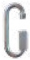
Abb. 2
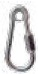
Abb. 3
|
Schnellverbindungsglieder nach DIN 56927 können entsprechend der Tragfähigkeitsangabe belastet werden.
|
Warnhinweis:
Schnellverbindungsglieder ohne Kennzeichnung und Angaben zur Tragfähigkeit dürfen nicht verwendet werden. |
Schnellverbindungsglied in der Sonderbauform können entsprechend der Tragfähigkeitsangabe belastet werden.
z. B. 90 x 8 mm,
200 kg nachgewiesene Tragfähigkeit nach DGUV Vorschrift 17 und 18
|
Tabelle 2 b Anschlagmittel für den allgemeinen Hebezeugbetrieb und sonstigen industriellen Einsatz
| Anschlagmittel |
Diese Anschlagmittel dürfen beim Einsatz in der Veranstaltungstechnik in der Regel nur mit der Hälfte der vom Hersteller angegebenen Tragfähigkeit belastet werden |
|
Schäkel, hochfest, geschweifte
Form
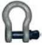
Abb. 4
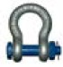
Abb. 5
|
Schäkel nach DIN EN 13889: 2009-02 haben einen Betriebskoeffizienten von 5.
Anmerkung:
Der Einsatz des Schäkels mit Mutter und Splint ist immer dann erforderlich, wenn betriebsbedingt zu erwarten ist, dass sich ein Bolzen lösen kann - z. B. bei bewegten Lasten über Personen, bei wiederkehrender Be- und Entlastung der Schäkel oder bei veränderlichen Betriebsbedingungen.
|
Warnhinweis:
Schäkel mit nicht bekannter Tragfähigkeit und nicht bekanntem Betriebskoeffizienten dürfen nicht verwendet werden. |
|
|
Aufhängeglied, oval
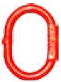
Abb. 6
|
Aufhängeglieder nach DIN 5688-3: 2007-04 haben einen Betriebskoeffizienten von 4.
Hinweis:
Beim mehrsträngigem Einsatz (Bridle) ist ggf. eine Reduzierung der Tragfähigkeit zu berücksichtigen.
|
|
Lasthaken, selbstverriegelnd
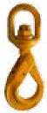
Abb. 7
|
Selbstverriegelnde Lasthaken nach DIN EN 1677-3: 2008-06 haben einen Betriebskoeffizienten von 4.
Es dürfen nur Lasthaken eingesetzt werden, deren Eigenschaften durch Herstellererklärung nachgewiesen sind.
Normative Festlegungen enthalten:
- DIN EN 1677-3: 2008-06 Geschmiedete, selbstverriegelnde Haken, Güteklasse 8
Anmerkung:
Die für den sicheren Betrieb erforderliche Bewegungsfreiheit des Lasthakens ist zu gewährleisten (z. B. mittels drehbarem Lasthaken).
|
|
Trägerklemme
Abb. 8
|
Es dürfen nur Trägerklemmen eingesetzt werden, deren Tragfähigkeit bekannt und deren Schließmechanismus zwangsgeführt ist (z. B. Gewindespindel).
Bei eigensicherer Dimensionierung und einer Konstruktionsweise, die ein Selbstlösen verhindert, kann unter Voraussetzung fachgerechter Montage auf die Sekundärsicherung verzichtet werden.
 |
Hinweis:
Trägerklemmen dürfen nur senkrecht zur Trägerachse belastet werden (kein Schrägzug).
Trägerklemmen dürfen nur an geeigneten und ausreichend tragfähigen Trägern montiert werden.
Träger mit Brandschutzbeschichtung sind grundsätzlich nicht geeignet. |
|
|
Spannschloss

Abb. 9
|
Spannschlösser sind grundsätzlich nicht zum Heben von Lasten geeignet und meist
nicht gekennzeichnet.
In der Veranstaltungstechnik sind Spannschlösser zum Halten von Lasten über
Personen dann zulässig, wenn der Hersteller Angaben zu der Tragfähigkeit und zum
Betriebskoeffizienten macht.
Spannschlösser dürfen sich nicht selbsständig aufdrehen können
|
Für Anschlagmittel hat der Hersteller eine Konformitätserklärung
nach Richtlinie 2006/42/EG (Maschinenrichtlinie) zu liefern und er
hat die Anschlagmittel mit folgenden Angaben zu kennzeichnen:
- Hersteller
- CE-Kennzeichnung
- Norm (sofern anwendbar)
- Tragfähigkeit
Im Kraftfluss zwischen dem Anschlagpunkt am Bauwerk und der
Last werden unterschiedliche Anschlagmittel eingesetzt. Anschlagmittel
werden ebenfalls beim Einsatz von Sekundärsicherungen
verwendet.
Verwendung
Ineinander greifende Elemente einer Verbindung (z. B. Schäkel
und Kausche einer Seilendverbindung) sind so auszuwählen,
dass sie mechanisch kompatibel und bei geschlossener Verbindung
frei beweglich sind. Auch die Gefahr einer Kerbwirkung bei
der Verbindung unterschiedlich harter Materialien muss berücksichtigt
werden.
2.1.1 Drahtseile als Anschlagmittel
Drahtseile als Anschlagmittel müssen der Normenreihe
DIN EN 13414 "Anschlagseile aus Stahldrahtseilen - Sicherheit"
entsprechen.
Im Unterschied zu den Anforderungen für allgemeine Hebezwecke
(DIN EN 13414-1: 2009-02, DGUV Regel 109-005 "Gebrauch von Anschlag-Drahtseilen") können in der Veranstaltungstechnik auch Drahtseile mit Durchmessern ab 4 mm als Anschlagmittel verwendet werden. Die hierfür verwendeten Rundlitzenseile müssen der DIN EN 12385-4: 2008-06 "Drahtseile aus Stahldraht – Sicherheit, Teil 4: Litzenseile für allgemeine Hebezwecke" entsprechen. Drahtseile mit Durchmessern von 4-6 mm kommen z. B. für das Halten von Dekorationen und Kulissen zum Einsatz. Für Drahtseile mit Durchmessern von 4-6 mm sollte eine Kennzeichnung z. B. auf einem Anhänger erfolgen, da eine Kennzeichnung auf der Pressung nicht praktikabel ist.
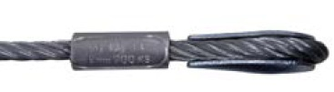
Abb. 10
Drahtseile als Anschlagmittel für allgemeine Hebezwecke nach
DIN EN 13414-1:2009-02 haben einen Mindestdurchmesser von
8 mm und sind mindestens mit Herstellerkennzeichen, Tragfähigkeit,
CE-Kennzeichnung und üblicherweise mit dem Herstellungsjahr
gekennzeichnet.
Tabelle 3 Tragfähigkeit von Drahtseilen als Anschlagmittel für Lasten über Personen
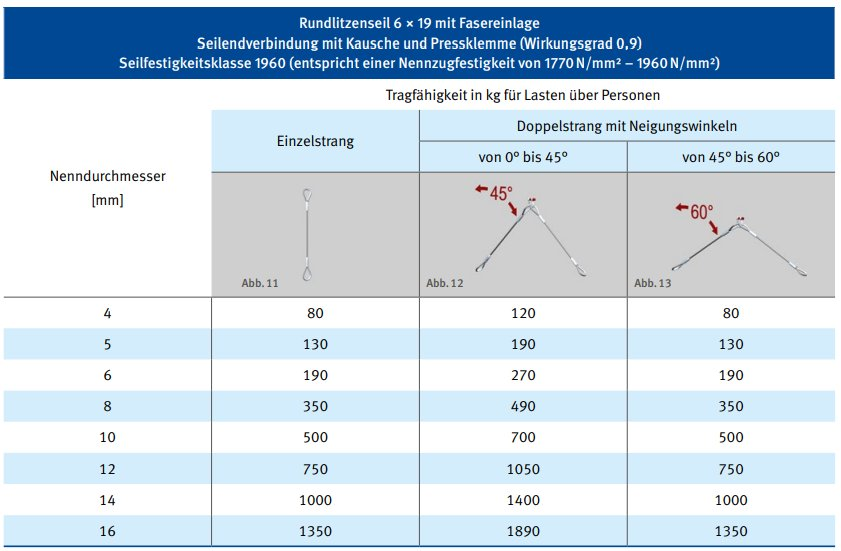
Bei einem Neigungswinkel von 0°-45° reduziert sich die Tragfähigkeit
um 30 Prozent, bei einem Neigungswinkel zwischen 45°
und 60° um 50 Prozent gegenüber zwei vertikalen Strängen.
Neigungswinkel über 60° sind grundsätzlich nicht zulässig.
Bei der Dimensionierung eines nicht symmetrisch belasteten
Doppelstrangs ist nur ein Strang als tragend anzunehmen; bei
mehreren Strängen dürfen nur zwei Stränge als tragend angenommen
werden.
Dies gilt nicht, wenn sichergestellt ist, dass sich die Last gleichmäßig
auch auf weitere Stränge verteilt.
Bei ungleicher Lastverteilung darf die zulässige Belastung der
einzelnen Stränge nicht überschritten werden.
|
Die Tragfähigkeit eines Drahtseils wird auch durch eine
starke Krümmung reduziert. Der Radius der Krümmung (r)
muss größer sein als der Seildurchmesser (d).
Um das Knicken der Seile an scharfen Kanten zu verhindern,
ist ein wirksamer Kantenschutz einzusetzen oder es
sind Trägerklemmen zu verwenden. Hierbei ist zu beachten,
dass auch für den Bolzen an einer Trägerklemme die
Bedingung r > d erfüllt sein muss.
|
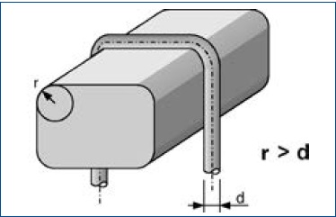
Abb. 14 Tragfähigkeit eines Drahtseils
Benutzung
- Es dürfen keine fest (unverschiebbar) mit Kunststoff ummantelten
Drahtseile verwendet werden
- Drahtseile sind geschützt vor schädigenden Einflüssen zu
lagern und zu transportieren.
- Drahtseile dürfen nicht so angeschlagen werden, dass die
Seilendverbindungen beschädigt werden können
- Drahtseile dürfen nicht geknotet werden
- Ablegereife Drahtseile dürfen keinesfalls weiterverwendet
werden.
Ablegereife
Kriterien für die Ablegereife von Drahtsteilen als Anschlagmittel
sind z. B.:
- sichtbare Drahtbrüche
- Knicke
- Quetschungen
- Korrosionsschäden
- Beschädigung der Seilendverbindung
- heraustretende oder beschädigte Fasereinlage
Weitere Informationen hierzu siehe DGUV Regel 109-005 "Gebrauch
von Anschlag-Drahtseilen" (Abschnitt 5 "Ablegereife").
Seilendverbindungen für Drahtseile
Als Seilendverbindungen für Drahtseile werden vorwiegend
Pressklemmen sowie Seilschlösser der Normenreihe
DIN EN 13411 "Endverbindungen für Drahtseile aus Stahldraht"
verwendet.
Seilendverbindungen können nach folgenden Normen ausgeführt
werden:
- DIN EN 13411-1: 2009-02 Kauschen für Anschlagseile aus
Stahldrahtseilen
- DIN EN 13411-2: 2009-02 Spleißen von Seilschlaufen für
Anschlagseile
- DIN EN 13411-3: 2011-04 Pressklemmen und Verpressen
- DIN EN 13411-4: 2011-06 Vergießen mit Metall oder Kunstharz
- DIN EN 13411-6: 2009-04 Asymmetrische Seilschlösser
- DIN EN 13411-7: 2009-04 Symmetrische Seilschlösser
Aluminium-Pressklemmen an Seilen mit Fasereinlage dürfen nur
bis zu einer Einsatz- bzw. Umgebungstemperatur von 100° C
eingesetzt werden; für Seile mit Stahleinlage gilt entsprechend
eine maximale Temperatur von 150° C. Höhere Temperaturen
können bei der Sicherung von Scheinwerfern am Gehäuse oder
in der Nähe des Gehäuses von Scheinwerfern auftreten.
Drahtseilschlaufen ohne Kauschen (Weichaugen) dürfen grundsätzlich
nicht verwendet werden.
Nicht genormte, verstellbare Seilendverbinder
Nicht genormte kraftschlüssig wirkende, verstellbare Seilendverbinder
dürfen zum Halten von Lasten über Personen nur verwendet
werden, wenn deren sichere Funktion eindeutig überprüfbar
ist und das tragende Seil nicht beschädigt wird. Benutzerinformationen
des Herstellers sind zu befolgen.
Seilklemmen
Seilklemmen nach DIN 1142 (alt) oder DIN EN 13411-5: 2009-02
dürfen zur Herstellung von Seilendverbindungen nicht verwendet
werden. Der Durchmesser von Drahtseilen schwankt infolge
der Seilelastizität bei häufigem Lastwechsel stark, so dass sich
Seilklemmen lockern können und eine sichere Seilendverbindung
auf Dauer nicht gewährleistet ist.
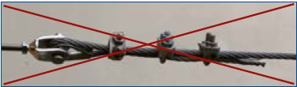
Abb. 15 Seilklemme nach DIN 1142 (alt) oder DIN EN 13411-5: 2009-02
Seilschlösser
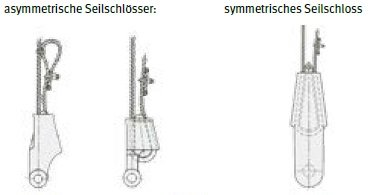
Abb. 16 Abb. 17 Abb. 18
|
Es dürfen nur Seilschlösser verwendet werden, die DIN EN 13411-6:
2009-04 oder 13411-7: 2009-04 entsprechen. Der Hersteller muss Angaben
über den Durchmesser und die Festigkeitsklasse des Seiles zur
Verfügung stellen, für die das Seilschloss ausgelegt ist. Seilschlösser
dürfen beim Einsatz in der Veranstaltungstechnik in der Regel nur mit
der Hälfte der sich daraus ergebenden Tragfähigkeit belastet werden.
Seilschlösser sind nur auf Zug zu beanspruchen und unter Berücksichtigung
der Betriebsbedingungen gegen unbeabsichtigtes Lösen zu sichern.
Das nicht tragende Seilende soll fixiert werden; das tragende Seil
darf nicht mit eingeklemmt werden.
Kennzeichnung:
- Hersteller
- Nenngröße oder Nenngrößenbereich
|
2.1.2 Rundschlingen als Anschlagmittel
In der Veranstaltungstechnik werden Rundschlingen vorrangig
zum Anschlagen von Traversen verwendet. Normative Anforderungen
sind in DIN EN 1492-2: 2009-05 "Rundschlingen aus
Chemiefasern" festgelegt.
Rundschlingen sind gekennzeichnet (Etikett) mit folgenden
Angaben:
- Hersteller
- Tragfähigkeit
- CE-Kennzeichnung
- Länge
- Werkstoff
- Norm
- Rückverfolgbarkeitscode
- Herstellungsjahr
Rundschlingen ohne Kennzeichnungen dürfen nicht verwendet
werden.
Rundschlingen zum Halten von Lasten über Personen dürfen
maximal mit dem 0,5-fachen Wert der vom Hersteller angegebenen
Tragfähigkeit (WLL) belastet werden.
In Tabelle 4 ist berücksichtigt, dass sich bei einem Neigungswinkel
von 7°- 45° die Tragfähigkeit um 30 Prozent und bei einem
Neigungswinkel zwischen 45° und 60° um 50 Prozent gegenüber
zwei vertikalen Strängen reduziert. Neigungswinkel über 60°
sind grundsätzlich nicht zulässig.
Bei der Dimensionierung eines nicht symmetrisch belasteten
Doppelstrangs ist nur ein Strang als tragend anzunehmen; bei
mehreren Strängen dürfen nur zwei Stränge als tragend angenommen
werden.
Dies gilt nicht, wenn sichergestellt ist, dass sich die Last gleichmäßig
auch auf weitere Stränge verteilt.
Bei ungleicher Lastverteilung darf die zulässige Belastung der
einzelnen Stränge nicht überschritten werden.
Tabelle 4 Tragfähigkeit von Rundschlingen für Lasten über Personen
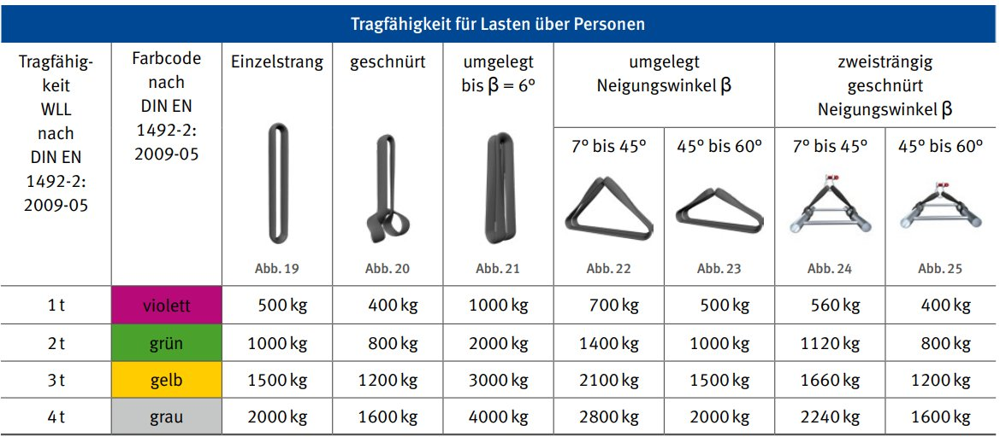
Abweichend von der Farbcodierung nach DIN EN 1492-2: 2009-05 werden für den Einsatz in der Veranstaltungstechnik Rundschlingen unterschiedlicher Tragfähigkeiten auch in Schwarz hergestellt.
Bei Einsatz von Rundschlingen ist darauf zu achten, dass diese
nicht über Kanten mit zu geringem Radius gelegt werden
("scharfe Kanten"). Der Radius (r) der Kanten muss größer sein
als die Dicke (d) der Rundschlingen. Das Maß d ist die Dicke der
belasteten Rundschlinge.
Bei scharfen Kanten (r < d) oder aufrauend wirkenden Oberflächen
müssen die gefährdeten Stellen der Rundschlingen geschützt
werden.
Dies wird durch einen geeigneten, an allen scharfen Kanten
angewendeten Kantenschutz erreicht.
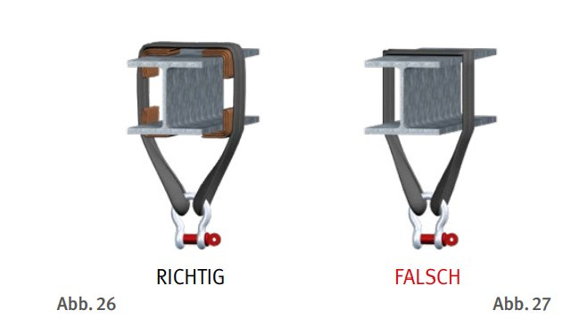
Verwendung
- Rundschlingen sind trocken sowie gegen Einwirkungen von
Witterungseinflüssen (insbesondere UV-Strahlung) und aggressiven
Stoffen (wie z. B. Lösemittel) geschützt zu lagern.
- An Rundschlingen dürfen keine Reparaturen oder andere
Veränderungen durchgeführt werden.
- Rundschlingen dürfen nicht geknotet oder ineinander geschnürt
werden.
Ablegereife
Kriterien für die Ablegereife von Rundschlingen sind z. B.:
- Schäden durch Wärmeeinfluss (z. B. Strahlung, Reibung,
Berührung)
- Beschädigung ihrer Vernähung bzw. der Ummantelung,
sodass die Einlage zu sehen ist
- Beschädigung durch chemische Einwirkungen
(z. B. Lösemittel)
- Versprödung durch physikalische Einwirkungen
(z. B. UV-Strahlung)
- Erreichen der Ablegekriterien nach Herstellerangaben
Weitere Hinweise zu Rundschlingen, siehe auch DGUV Information
209-061 "Gebrauch von Hebebändern und Rundschlingen
aus Chemiefasern". Die darin angegebenen Tragfähigkeiten
beziehen sich auf den allgemeinen Hebezeugbetrieb (keine
Lasten über Personen).
2.1.2.1 Rundschlingen aus synthetischen Fasern
Aufgrund ihrer Materialeigenschaften dürfen Rundschlingen aus
synthetischen Fasern für Lasten über Personen nur in Verbindung
mit einer ausreichend dimensionierten metallischen Sekundärsicherung
eingesetzt werden.
2.1.2.2 Rundschlingen mit Drahtseileinlage
Rundschlingen mit Drahtseileinlage bestehen aus einem endlos
gelegten Rundlitzenstahlseil in einem Polyestermantel.
Rundschlingen mit Drahtseileinlagen sind nicht genormt und
daher in der Regel auch nicht mit einem Farbcode nach
DIN EN 1492-2: 2009-05 gekennzeichnet.
Tragfähigkeit, Verwendung, Prüfung und Ablegereife richten sich
nach den Angaben des Herstellers. Bei der Verwendung ist der
Mindestbiegeradius nach Herstellerangabe zu berücksichtigen.
Vorzugsweise sind Rundschlingen mit Drahtseileinlage einzusetzen, die von einer akkreditierten Stelle geprüft und zertifiziert
sind.
2.1.3 Ketten als Anschlagmittel
Stahlketten werden in vielen Formen und Qualitäten angeboten.
Für das Halten von Lasten sind nur kurzgliedrige Rundstahlketten
(Teilung T=3 x d; Teilung, die dem Dreifachen des Kettenglied-Durchmessers entspricht) mit verschweißten Kettengliedern
nachgewiesener Qualität geeignet.
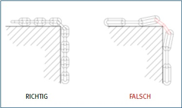
Abb. 28 und 29 Darstellung der Benutzung von Ketten an Kanten
Für Lasten über Personen werden vorzugsweise Anschlagketten
nach der Normenreihe DIN EN 818 der Güteklasse 8 eingesetzt.
Anschlagketten höherer Güteklassen sind ebenfalls zulässig und
herstellerspezifisch gekennzeichnet.
Andere Ketten (z. B. Hebezeugketten und Zurrketten zur Ladungssicherung)
dürfen nicht als Anschlagketten eingesetzt
werden.
Anschlagketten sind mindestens meterweise mittels Kettenstempel
des Herstellers markiert und ihre Güteklasse ist
durch Kettenanhänger ausgewiesen.
Abb. 30 Kettenstempel als Herstellerkennzeichnung
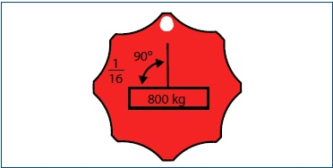
Abb. 31 Anhänger an 1-strängiger 16 mm-Kette > rot = Güteklasse 8
Anschlagketten zum Heben sind in Nenngrößen eingeteilt und
gekennzeichnet durch die Ketten-Nenndicke und die erste Ziffer
der Bruchspannung.
Beispiel: NG 8-8 Ketten-Nenndicke 8 mm, Bruchspannung
800 N/mm²
In Tabelle 5 ist berücksichtigt, dass sich bei einem Neigungswinkel
von 7°-45° die Tragfähigkeit um 30 Prozent und bei einem
Neigungswinkel zwischen 45° und 60° um 50 Prozent gegenüber
zwei vertikalen Strängen reduziert. Neigungswinkel über 60°
sind grundsätzlich nicht zulässig.
Bei der Dimensionierung eines nicht symmetrisch belasteten
Doppelstrangs ist nur ein Strang als tragend anzunehmen; bei
mehreren Strängen dürfen nur zwei Stränge als tragend angenommen
werden.
Dies gilt nicht, wenn sichergestellt ist, dass sich die Last gleichmäßig
auch auf weitere Stränge verteilt.
Bei ungleicher Lastverteilung darf die zulässige Belastung der
einzelnen Stränge nicht überschritten werden.
Tabelle 5 Tragfähigkeit von Anschlagketten
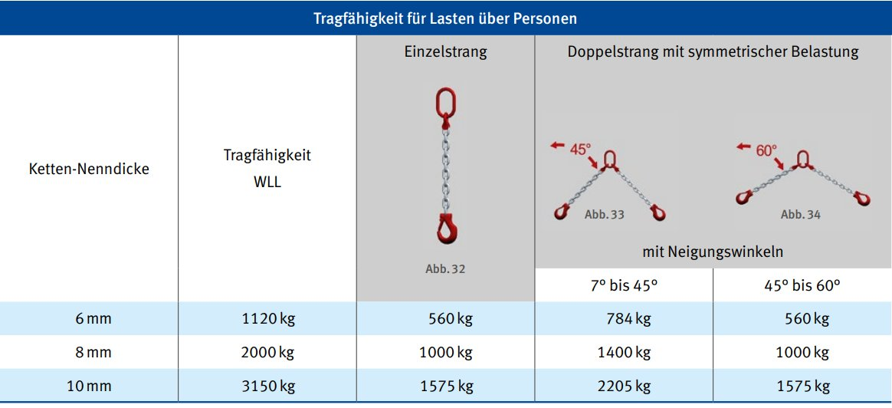
Für die Anpassung der Kettenlänge werden Kettenverkürzer in
unterschiedlichen Bauarten angeboten; die dazugehörenden
Benutzerinformationen sind strikt zu beachten. Kettenverkürzer
dürfen nur in der bestimmungsgemäßen Gebrauchslage verwendet
werden.
Besteht die Gefahr des unbeabsichtigten Lösens eines Kettenverkürzers
(z. B. Lastwechsel oder nichtvertikale Einbaulage), so
sind nur Kettenverkürzer einzusetzen, die mit Sicherungselementen
gegen ungewolltes Aushängen ausgerüstet sind.
In besonderen Anwendungsfällen (z. B. beim sogenannten
"Bridle") dürfen auch langgliedrige Ketten, deren Tragfähigkeit
bekannt ist, eingesetzt werden, um die Länge eines Laststrangs
durch Einsatz eines Schäkels innerhalb einer Aufhängung anpassen
zu können.
Vwewendung
- Die Funktionsfähigkeit von Sicherungselementen (z. B. Verriegelungsbolzen
an Kettenverkürzungselementen) ist vor jedem Einsatz zu prüfen.
- Ketten dürfen nicht geknotet werden.
- Ketten sind so um scharfe Kanten der Last zu legen, dass
Kettenglieder nicht verbogen werden.
- Verdrehte Ketten dürfen nicht zum Anschlagen von Lasten verwendet werden.
- Hebezeugketten dürfen nicht als Anschlagketten verwendet werden
Ablegereife
Kriterien für die Ablegereife von Ketten sind z. B.:
- Verschleiß
- Risse
- Bruch eines Kettengliedes
- Korrosionsschäden
- Deformation von Kettengliedern oder Kettenbauteile
2.2 Lastaufnahmemittel
Lastaufnahmemittel in der Veranstaltungstechnik sind
typischerweise:
- Traversen
- Laststangen
- spezielle Konstruktionen zur Lastaufnahme
(z. B. Lautsprecher-, Traversen- oder Beameraufhängungen)
Traversen in der Veranstaltungstechnik sind Fachwerk-Träger,
die für das Errichten von Tragwerkkonstruktionen zur Montage
von Scheinwerfern, Lautsprechern und vergleichbaren Geräten
bestimmt sind.
Die Anforderungen an die Auswahl, Benutzung und Prüfung von
Traversen werden im IGVW Standard SQ P1 "Traversen" beschrieben.
Die IGVW Qualitätsstandards stehen unter www.igvw.de zur
Verfügung.
Für die in der Veranstaltungstechnik eingesetzten Traversen-Elemente
müssen statische Nachweise oder Baumusterprüfungen
vorliegen.
Diese Nachweise enthalten ggf. auch konkrete Festlegungen für
standardisierte Aufbauvarianten. Für nichtstandardisierte Aufbauvarianten
sind eigenständige Berechnungen durchzuführen.
Traversen sind in der Regel nicht nach dem Prinzip der doppelten
Nennbelastung dimensioniert, sondern nach den Anforderungen
entsprechend Eurocode 0-9.
Die Auswahl der Traversen in Bezug auf deren Tragfähigkeit
muss so erfolgen, dass keinerlei Überlastung auftritt; vernünftigerweise ist die Tragfähigkeit nicht maximal auszunutzen.
Laststangen sind vorrangig Lastaufnahmemittel von Prospektzügen.
Die Ausführung erfolgt nach DIN 56950-1: 2012-05. Für derartige
Laststangen sind Tragfähigkeitsangaben vorhanden, die
sowohl die mögliche Gesamtlast und zulässige Streckenlasten
als auch maximale Punktlasten festlegen. Die Tragfähigkeitsangaben
berücksichtigen die in Abschnitt 1 beschriebene, erhöhte
Sicherheit. Dynamische Kräfte sind zu beachten.
Spezielle Konstruktionen zur Lastaufnahme sind so auszuführen,
dass die Last formschlüssig aufgenommen wird. Die Konstruktionen
müssen in ihrer Bauart so beschaffen sein, dass die
zu erwartenden Lasten sicher aufgenommen werden können.
Spezielle Konstruktionen zur Lastaufnahme müssen mit Tragfähigkeit,
einer Typenbezeichnung, Hersteller und dem Baujahr
oder einer Seriennummer gekennzeichnet sein. Liegt ein Nachweis
für den speziellen Anwendungsfall "Lasten über Personen"
vor, dürfen sie nach Herstellerangabe belastet werden. Liegt
kein Nachweis vor, dürfen sie nur mit der Hälfte der Herstellerangabe
belastet werden. Sind sie nicht gekennzeichnet, dürfen sie
nicht verwendet werden.
Tabelle 6 Spezielle Lastaufnahmemittel in der Veranstaltungstechnik
| Lastaufnahmemittel |
Beschreibung |
Lastaufnahmemittel für Traversen 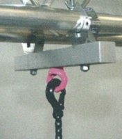 Abb. 35 |
Spezielle Lastaufnahmemittel für Traversen bestehen häufig aus einer Kombination einzelner Bauteile. Die Kennzeichnung der einzelnen Bauteile des Lastaufnahmemittels gibt keine Auskunft über die Gesamt-Tragfähigkeit des Lastaufnahmemittels.
Für das gebrauchsfertige Lastaufnahmemittel muss der Hersteller die zulässige Tragfähigkeit angeben. |
Lastaufnahmemittel für Beschallungs- und Beleuchtungssysteme 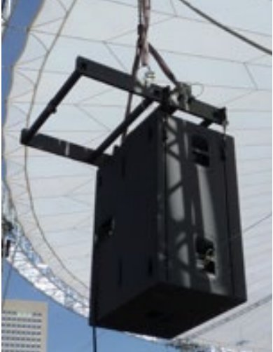 Abb. 36 |
Die Aufhängung von Beschallungs- und Beleuchtungssystemen besteht häufig aus einem Verbund von unterschiedlichen Komponenten und Lastaufnahmemitteln. In derartigen Systemen dürfen nur vom Hersteller zugelassenen Komponenten eingesetzt werden.
Eigensicher ausgeführte Beschallungs- und Beleuchtungssysteme sowie deren eigensicher ausgeführte Aufhängungen (z. B. Flugrahmen) benötigen innerhalb des Systems keine zusätzlichen Maßnahmen zum Schutz gegen Herabfallen. |
Genormte Scheinwerfer und Leuchtenbefestigungselemente nach DIN 15560-24: 1996-12 sowie Befestigungselement und Übergangsstücke
nach DIN 15560-25: 1987-01 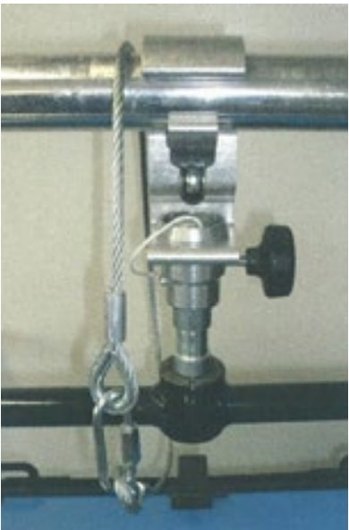 Abb. 37 |
Scheinwerfer, Grundplatte, Rohrschelle und Zapfen, Leuchtenhülse für Foto- und Reportageleuchten
Drehsockel, Hülsen mit Feststellschrauben für Hängescheinwerfer, Stativhülse, Stativplatte, geschlossene Gelenk-Rohrschelle, offene Rohrschelle, Abnahmezapfen, Übergangsstücke
Diese Lastaufnahmemittel sind eigensicher ausgeführt und werden angewendet für Lasten von maximal 60 kg.
Die so montierten ortsveränderlichen Scheinwerfer und Leuchten werden zusätzlich mit einem Sicherungsseil gesichert (vgl. Abschnitte 1.3 und 2.3).
Anmerkung:
Wenn bei der Befestigung eines Scheinwerfers mit den Verbindungselementen "Scheinwerferzapfen ZC" und "Hülse mit Feststellschraube HB" der zusätzliche Sicherungsstift verwendet wird, kann auf eine Sekundärsicherung verzichtet werden. |
nicht nach Norm gefertigte Lastaufnahmemittel Abb. 38 |
Nicht nach Norm gefertigte Lastaufnahmemittel können z. B. Scheinwerfer- und Leuchtenbefestigungselemente, Beamer- und Monitorhalterungen sein.
Diese sind nach den grundlegenden Sicherheitsanforderungen auszuführen und eigensicher zu dimensionieren (vgl. Abschnitte 2.1 und 2.2).
Hinsichtlich ihrer Verwendung sind die Herstellerangaben zu beachten. |
2.3 Sicherungselemente
Ein Sicherungselement (Sekundärsicherung bzw. zweite, unabhängige
Sicherung) besteht in der Regel aus Drahtseil, Seilendverbindung
und Schnellverbindungsglied. In Sonderfällen werden
Rundstahlketten verwendet. Vorzugsweise werden solche
Schnellverbindungsglieder eingesetzt, die unverlierbar mit dem
Sicherungsseil oder mit der Sicherungskette verbunden sind. Für
Sicherungsseile und -ketten sowie Seilendverbindungen gelten
grundsätzlich die gleichen Beschaffenheitsanforderungen und
Nutzungsbedingungen, die in den Abschnitten 1.1 bis 1.3 beschrieben
wurden.
Ergänzend bestehen folgende Anforderungen:
- Ein Sicherungsseil wird aus einem Drahtseil nach
DIN EN 12385-4 :2008-06 mit einer Nennfestigkeit der Drähte
von mindestens 1770 N/mm² gefertigt. Auf dieser Seilqualität
basieren die nachfolgenden Festlegungen (vgl. auch
DIN 56927: 2013-07). Drahtseile anderer Nennfestigkeit und
Materialien sind gesondert zu beurteilen und zu prüfen.
- Seilendverbindungen für Sicherungsseile werden nach
DIN EN 13411-3: 2011-04 ausgeführt.
Die Dimensionierung der Elemente berücksichtigt die dynamischen
Kräfte beim Auffangen der Last.
Als Sekundärsicherung werden sowohl Sicherungsseile ohne
Dämpfungselemente als auch Sicherungsseile mit Dämpfungselementen
verwendet.
| Dimensionierung der Sekundärsicherung |
|
Fällt eine Last in das Sicherungselement, entsteht eine
impulsartige Beanspruchung des Seiles. Dabei kann es zur
Beschädigung von Elementen kommen, die sich im Kraftfluss
befinden (z. B. Sicherungsseil, Sicherungsöse am
Scheinwerfer, Lastaufnahmepunkt am Bauwerk, Tragseile
von Leuchtenhängern). Innerhalb einer Sekundärsicherung
ist das schwächste Bauteil maßgebend für die Dimensionierung
der gesamten Sekundärsicherung.
|
Kennzeichnung
Sicherungsseile gelten nicht als Anschlagmittel im Sinne der Maschinenrichtlinie und können somit keine CE-Kennzeichnung aufweisen. Sie sind daher vom Hersteller nach den gesetzlichen Anforderungen (ProdSG) zu kennzeichnen. Zusätzlich sind die maximal zulässige zu sichernde Masse und der Seildurchmesser anzugeben.
Anschlagseile im Sinne der Maschinenrichtlinie dürfen als Sicherungsseile verwendet werden.
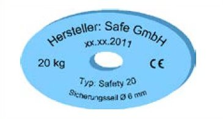
Abb. 38 Beispiel einer Kennzeichnung
| Individuelle Tragfähigkeitsangaben
beschreiben nicht das maximal zulässige Gewicht im Absturzfall! |
|
Einzelne Elemente (z. B. Schnellverbindungsglieder, Pressklemmen)
können mit individuellen Tragfähigkeitsangaben
(z. B. WLL) versehen sein. Die Tragfähigkeitsangaben gelten
in der Regel für das Heben von Lasten im Hebezeugbetrieb.
Sie beschreiben nicht das maximal zulässige Gewicht,
für das das Sicherungsseil oder die Sicherungskette
im Hinblick auf die Sicherung von Lasten im Absturzfall
ausgelegt ist!
|
2.3.1 Sicherungsseile ohne Dämpfungselement
Sicherungsseile ohne Dämpfungselement sind nach den Festlegungen der Tabelle 7 auszuwählen.
Die Dimensionierungen der Tabelle 7 basieren auf den Festlegungen der DIN 56927: 2013-07; daneben kann die Dimensionierungvon Sicherungsseilen auch nach dem im Anhang von DIN 56927: 2013-07 beschriebenen Prüfverfahren nachgewiesen werden.
Tabelle 7 Sicherungsseil als Sekundärsicherung
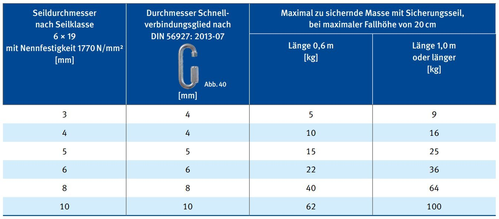
Die Werte der obigen Tabelle wurden auf Basis der DIN 56927:
2013-07 ermittelt.
Die Festlegungen in der DIN 56927: 2013-07 enthalten unterschiedliche
Dimensionierungen für die einsträngige und die
zweisträngige Sicherungsmethode. Die Unterschiede sind jedoch
so gering, dass dies für die Anwendung unbedeutend ist.
Werden andere als die in der Tabelle aufgeführten Verbindungsglieder verwendet, so ist sicherzustellen, dass diese
- eine Bruchkraft aufweisen, die mindestens der Bemessungsbruchkraft
nach DIN 56927: 2013-07 entspricht. Eine ausreichende
Tragfähigkeit wird berechnet durch Multiplikation des
Gewichtes der zu sichernden Masse mit dem Faktor 80 für
0,6 m Seillänge bzw. mit dem Faktor 50 für 1,0 m Seillänge und
- gegen Selbstlösen gesichert sind.
Für größere Lasten oder den Gebrauch von Rundstahlketten als
Sicherungselemente sind eigenständige Dimensionierungen
unter Bewertung der Fallbewegung durchzuführen. Hierbei ist
sicherzustellen, dass der vorhersehbare Fallweg der zu sichernden
Last so gering wie möglich ist. Dieses Ziel wird am ehesten
durch Ketten erreicht, die sich verkürzen lassen.
2.3.2 Sicherungsseile mit Dämpfungselement
Alternativ zu den Sicherungsseilen laut Tabelle 8 können Sicherungsseile
mit Dämpfungselement benutzt werden.
Sicherungsseile mit Dämpfungselement können den beim Herabfallen
einer Last in das Sicherungselement auftretenden Fangstoß
erheblich reduzieren. Deshalb haben Sicherungsseile mit
Dämpfungselement im Vergleich zu Sicherungsseilen ohne
Dämpfungselement einen geringeren Querschnitt.
Ein weiterer Vorteil ist die im Fehlerfall reduzierte Belastung aller
im Kraftfluss befindlichen Elemente (z. B. Aufhängepunkt,
Schnellverbindungsglied, Sicherungsöse an der Last).
Die zuverlässige Wirkung des Dämpfungselementes ist entscheidend
für die sichere Funktion des gesamten Sicherungsseiles.
Deshalb ist die Ausführung des Dämpfungselementes von wesentlicher
Bedeutung. Sicherungsseile mit Dämpfungselement
sind in einer qualitätsgesicherten Fertigung herzustellen und
sollen baumustergeprüft sein.
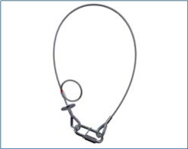
Abb. 41 Sicherungsseil mit Dämpfungselement
2.3.3 Benutzung von Sicherungselementen
Ein Sicherungselement (Safety) ist so anzubringen, dass es
keinen Fallweg zulässt. Ist ein Fallweg unvermeidbar, so ist dieser
so gering wie möglich zu halten.
Bei der Sicherung von Arbeitsmitteln, die nach der Montage
ausgerichtet werden müssen, wie z. B. Scheinwerfern, darf der
maximale Fallweg von 20 cm nicht überschritten werden - unabhängig
von der Befestigungsart.
Das Sicherungselement wird am vom Hersteller definierten Befestigungspunkt des Arbeitsmittels (z. B. Öse, Bügel) angebracht. Der Hersteller hat den Befestigungspunkt zu kennzeichnen,
z. B. farblich oder mit einem Piktogramm. Es ist nicht zulässig, das Sicherungselement an Elementen des Arbeitsmittels
anzubringen, die nicht dafür geeignet sind (etwa an Griffen).
Beispiel für Kennzeichnung des Befestigungspunktes für das Sicherungselement
Abb. 42 Befestigungspunkt für das Sicherungselement
Bei Schnellverbindungsgliedern wird die sichere Funktion nur
durch vollständiges Schließen der Schraubverbindung erreicht.
Diese wird handfest angezogen.
Seile oder Bänder aus natürlichen oder synthetischen Fasern
dürfen als Sicherungselement nicht verwendet werden, da diese
bei Temperatureinwirkung (z. B. durch Scheinwerfer) und im
Brandfall keine ausreichende Sicherheit bieten.
Ein Sicherungselement, das einmal belastet wurde oder augenscheinlich
beschädigt ist, darf nicht mehr verwendet werden.
2.4 Besondere Lasten
Lasten gehören nicht zu den Lastaufnahmemitteln, Anschlagmitteln
oder Hebezeugen und unterliegen daher nicht grundsätzlich
der Maschinenrichtlinie und deren Betriebskoeffizienten (vgl.
Tabelle 1). Dennoch müssen die Lasten und deren tragende
Strukturen die auftretenden Belastungen sicher aufnehmen. Zur
Berechnung und Ausführung sollen die bestehenden Regeln der
Technik herangezogen werden. Dies sind z. B.:
- Eurocode 3/DIN EN 1993-1-1:2010-12
- Eurocode 5/DIN EN 1995-1-1:2010-12
- Eurocode 9/DIN EN 1999-1-1:2014-03
Für Lasten und deren tragende Strukturen gelten darüber hinaus
die konstruktiven Anforderungen entsprechend Abschnitt 1.1.
Bei der Auswahl sind die zulässigen Betriebszustände (Einsatz im Innen- oder Außenbereich) zu berücksichtigen.
Bei windanfälligen Lasten, wie z. B. modularen LED�Wänden, Dekorationen, Lautsprecher-Arrays, sind insbesondere folgende Informationen erforderlich:
- Max. Windgeschwindigkeit und Winddruck
- Aufhängehöhen
- Modulanordnungen (max. Anzahl von Modulen vertikal
und horizontal
- Anordnung und Anzahl notwendiger Aussteifungen
- Aktionsplan Wetterereignisse (siehe auch IGVW SQP5)
Diese Informationen und Werte sollten in übersichtlicher Form (z.B. Tabelle, Auswahlmatrix) dargestellt sein.
Es dürfen nur Tragkonstruktionen ausgewählt werden, die nach dem anerkannten Stand der Technik konstruiert und hergestellt wurden und geeignet sind, alle auftretenden Belastungen sicher aufnehmen und ableiten zu können.
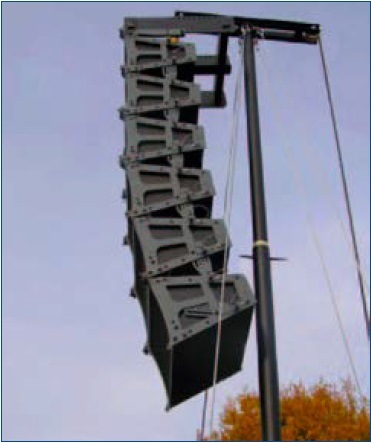
Abb. 43 Angewinkelte Lautsprechersysteme
Abb. 44 LED-Dekoration
Werden zur Berechnung von Tragkonstruktionen softwarebasierte
Programme angewendet, muss das verwendete Programm für die
vorgesehenen Berechnungen geeignet sein. Die Grundlagen der
Berechnung mit z. B. verwendeter Version der Software, getroffenen
Annahmen, Programmeinstellungen und Eingabedaten sind
zu dokumentieren. Die erforderliche Qualifikation der Anwender
der Software ist zu gewährleisten. Ergebnisse von derartigen Berechnungsmethoden bedürfen einer Bewertung durch erfahrene
und qualifizierte Ingenieure oder Personen mit vergleichbarer Qualifikation.
Im Rahmen der Auswahlverantwortung hat der Unternehmer
oder die Unternehmerin und ggf. auch der Auftraggeber oder
die Auftraggeberin zu berücksichtigen, dass die erforderliche Fachkunde
in allen Schritten der Arbeitsprozesse sicher gestellt ist.
Beispiel Spiegelkugelsystem
Spiegelkugelsysteme (= Spiegelkugel + Antrieb + Befestigung)
müssen den grundlegenden Sicherheitsanforderungen nach
Abschnitt 1 entsprechen. Die Systeme sollen konstruktiv eigensicher
ausgeführt sein. Siehe auch Abbildung 45.
Benutzung
Spiegelkugelsysteme sind außerhalb des Handbereiches von
Personen und in sicherem Abstand zu anderen Gegenständen
aufzuhängen. Falls kein eigensicheres Spiegelkugelsystem gegeben
ist, muss das Prinzip der Einfehlersicherheit angewendet
werden. Dies kann z. B. durch den Einsatz einer Auffangvorrichtung
erfolgen.
Spiegelkugelantriebe sind maschinentechnische Einrichtungen.
Die grundsätzlichen Prüfanforderungen an maschinentechnische
Einrichtungen für den Veranstaltungs- und Produktionsbetrieb
sind in der nach DGUV Vorschrift 17 und 18 "Veranstaltungs- und
Produktionsstätten für szenische Darstellungen" und im
DGUV Grundsatz 315-390 "Grundsätze für die Prüfung maschinentechnischer
Einrichtungen in Bühnen und Studios" geregelt. Das bedeutet insbesondere, dass die Motor-/Getriebeeinheit in
Kraftrichtung formschlüssig ausgeführt sein muss.
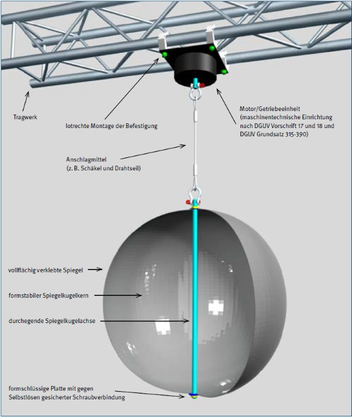
Abb. 45 Eigensicheres Spiegelkugel-System